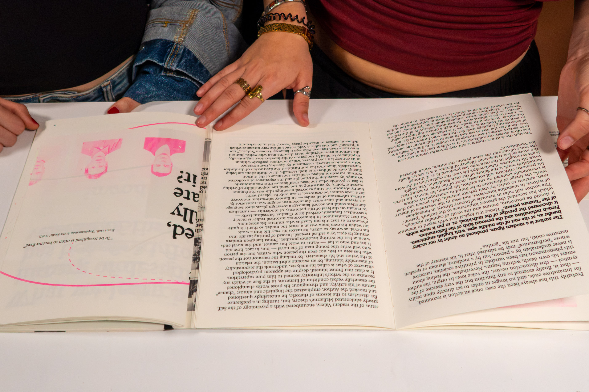
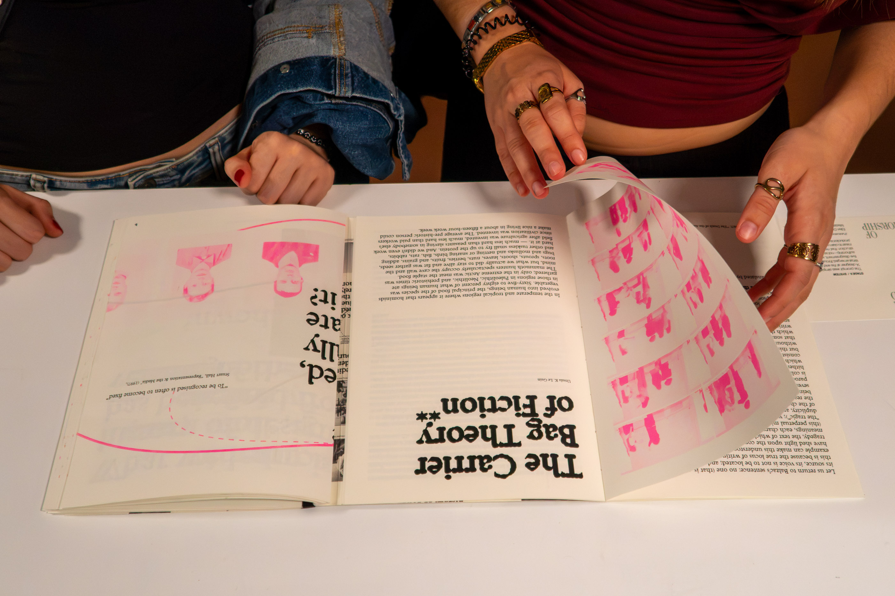
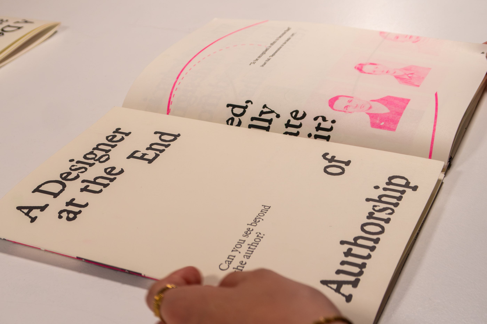
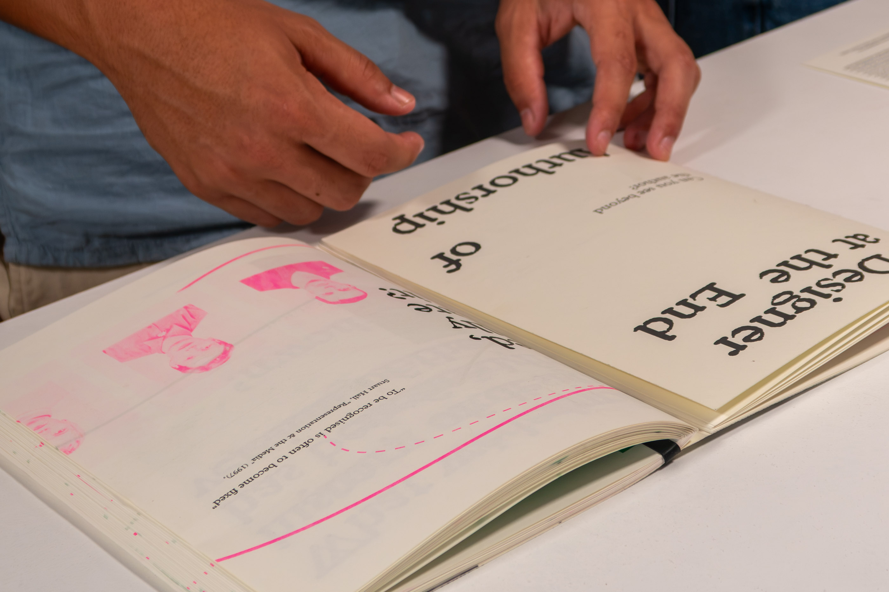
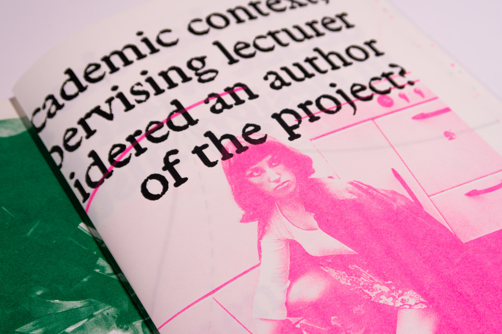
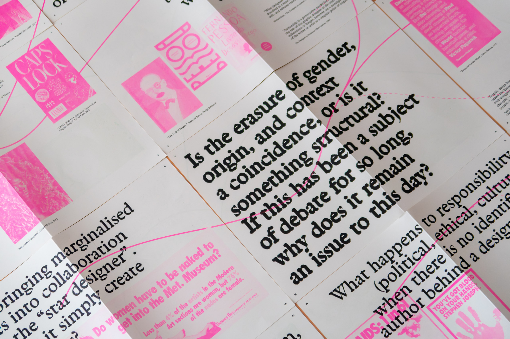
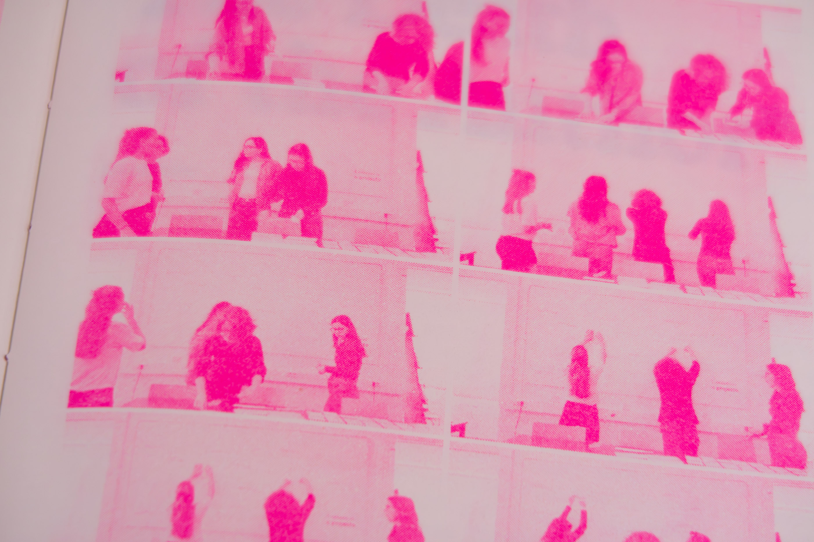
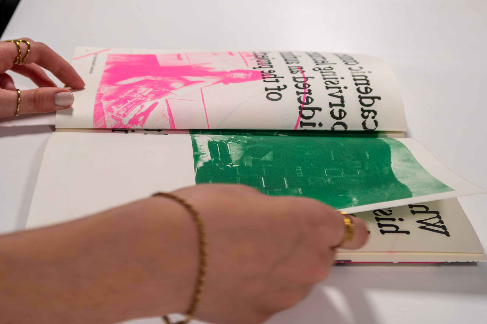
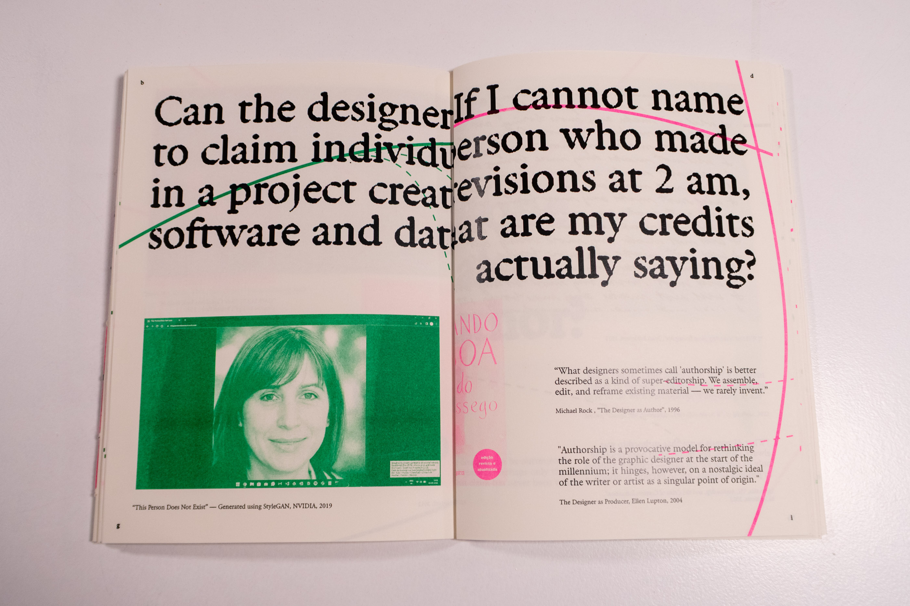

Overview
This project takes place at the end of the BA in Communication Design at the Faculty of Fine Arts in Lisbon — a moment of unusual freedom, the particular protection the university still allows: the freedom to ask what truly matters to us as designers, as citizens, as people who use the tools of visual communication to intervene in the world.
The brief was simple: complete the sentence “A designer at the end of…” and turn it into a communication design project. Working collectively meant learning to stay inside disagreement — and gradually, our questions converged on a single issue: authorship. Not as a settled category, but as a construction that needed to be questioned, especially in a discipline where production is always collaborative, always distributed across clients, technologies, contexts, and invisible hands.
These questions extend a longer conversation. Roland Barthes’ “death of the author” opened meaning-making to the reader; Michel Foucault reframed authorship as a function tied to power — who gets to speak and be heard. Design, though, was slow to let go of its own heroes and origin myths. Ursula K. Le Guin’s Carrier Bag Theory offered another model altogether: not the spear that conquers and centers a singular hero, but the basket that gathers, carries, and sustains — a way of narrating built around care and relation rather than authorship.
“A Designer at the End of Authorship” is neither a thesis nor a manifesto — it’s a publication that tries to put its own questions into practice, making visible the negotiations, hesitations, and invisible labour behind any collective work. Rather than resolving authorship, it leaves traces of a process, treating some questions as more productive when left unresolved.








This project was developed as part of the Communication Design VI course, within the Communication Design programme at Faculdade de Belas-Artes, and was included in the class of 2026’s exhibition at MUDE — Lisbon Design Museum.
© ellen damazio, 2026 — designed & coded